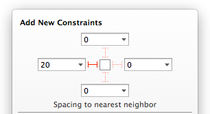

The easiest way to add, edit, or remove constraints is to use the visual layout tools in Interface Builder. Creating a constraint is as simple as Control-dragging between two views, or to add multiple constraints at once, you simply use the various pop-up windows.
Adding Constraints
When you drag out an element from the Object Library and drop it on the Interface Builder canvas, it starts out unconstrained to make it easy to prototype your interface by dragging elements around. If you build and run without adding any constraints to an element, you’ll find that Interface Builder fixes the element’s width and height, and pins its position relative to the top left corner of the superview; this means that resizing the window doesn’t move or resize the elements. To make your interface react correctly to changes in size or orientation, you need to start adding constraints.
There are several ways to add constraints depending on the level of precision you want and the number of constraints you want to add at a time.
Adding Constraints with Control-Drag
The fastest way to add a constraint is by holding down the Control key and dragging from a view on the canvas, much like the way you create links to outlets or actions. This Control-drag method is a quick, precise tool for creating a single constraint when you know exactly what type of constraint you want and where you want it.
You can Control-drag from an element to itself, to its container, or to another element. Depending on what you drag to and which direction you drag in, Auto Layout limits the possibilities of constraints appropriately. For example, if you drag horizontally to the right from an element to its container, you have the options to pin the element’s trailing space or to center it vertically in the container.
Adding Constraints with Align and Pin Menus
You can also add constraints using the Auto Layout menu, which resides on the Interface Builder canvas.
In addition to adding constraints for alignment or spacing, you can also use this menu to resolve layout issues, and determine constraint resizing behavior.
Align. Create alignment constraints, such as centering a view in its container, or aligning the left edges of two views.
Pin. Create spacing constraints, such as defining the height of a view, or specifying its horizontal distance from another view.
Issues. Resolve layout issues by adding or resetting constraints based on suggestions (see “Resolving Auto Layout Issues”).
Resizing. Specify how resizing affects constraints .
Constraint options that require multiple elements are disabled if you have only a single element selected.
To add a constraint from the Align or Pin menu
Select the checkbox next to the appropriate constraint.
To select a “Spacing to nearest neighbor” constraint, select the red constraint corresponding to the appropriate side of the element.

If you need to create a constraint related to another view that is not the nearest neighbor, click the black disclosure triangle in the value text field to display a drop-down menu of other nearby views.
Enter a corresponding constant value.
Press a button to create the constraints.
The Add Constraints button adds the new constraints to the selected elements.
The Add and Update Frames button adds the new constraints to the selected elements, and moves the elements in your interface to satisfy every constraint as well as possible.
Adding Missing or Suggested Constraints
Use the Issues menu to add constraints if you need a starting point for your layout, or if you need to make a lot of changes quickly.
If you need to add a large set of constraints to describe your interface layout and you don’t want to add constraints one at a time, choose Issues > Add Missing Constraints to add a nonambiguous set of constraints. This command infers constraints based on where things are laid out.
If you need to revert to a set of constraints without errors, or you just want to start over, choose Issues > Reset to Suggested Constraints to remove erroneous constraints and add a nonambiguous set of constraints. This is equivalent to Clear Constraints followed by Add Missing Constraints.
Editing Constraints
You can change the constant, relation, and priority of a constraint. You can edit these properties either by double-clicking the constraint on the canvas and editing the value, or by selecting the constraint and using the Attributes inspector. You cannot, however, change the type of a constraint (for example, you can’t change a width constraint into a height constraint).
Deleting Constraints
Delete any constraint at any time by selecting it on the canvas or in the outline view and pressing the Delete key.